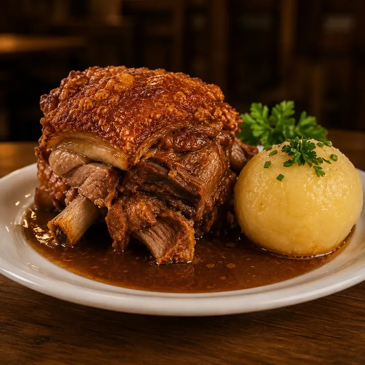
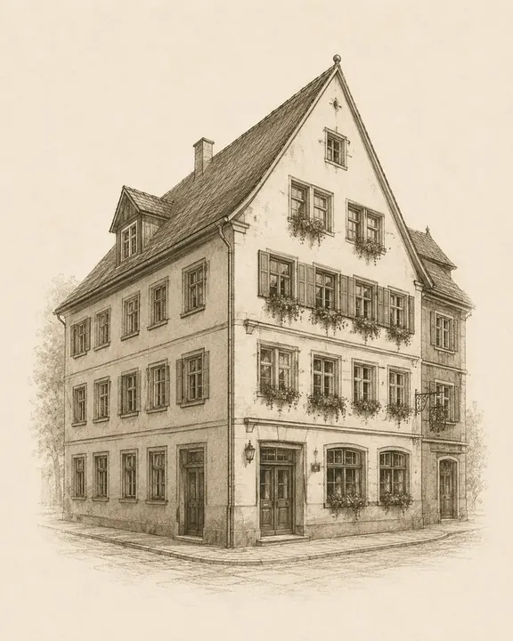
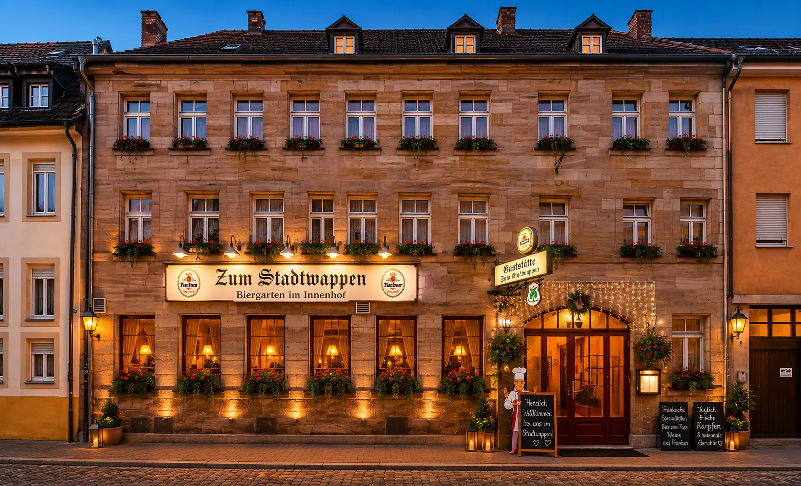
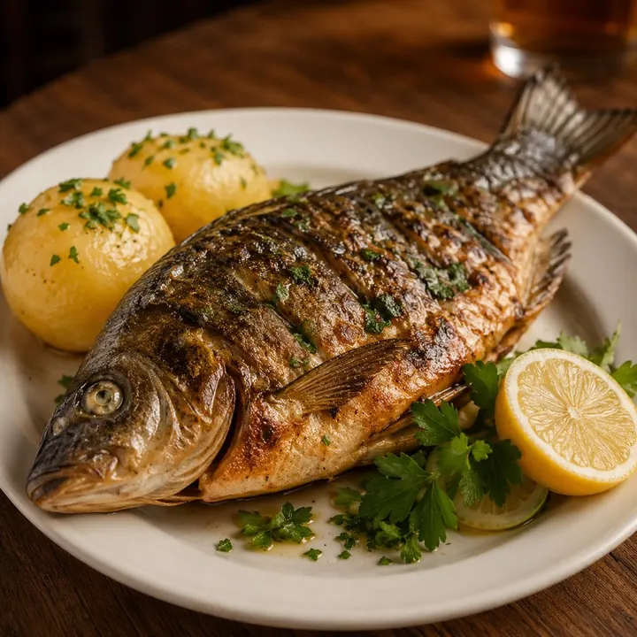
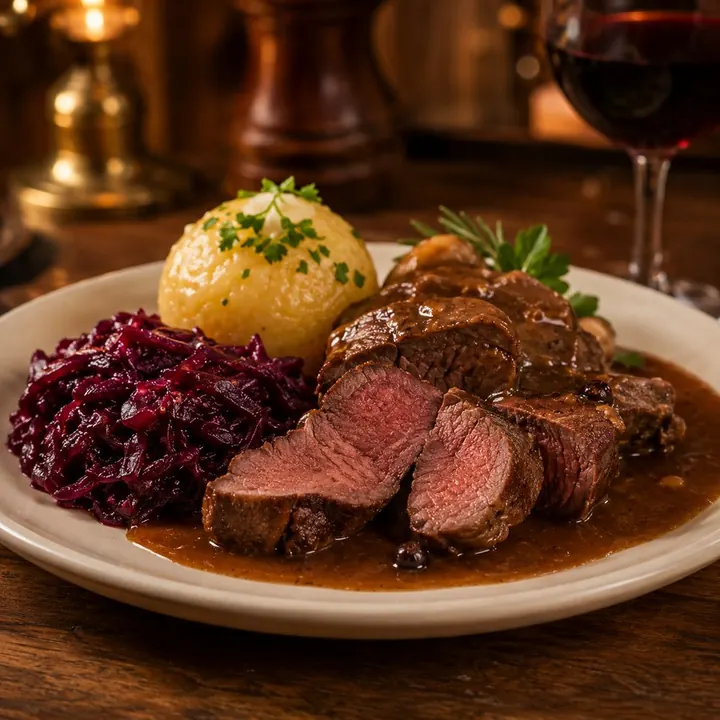
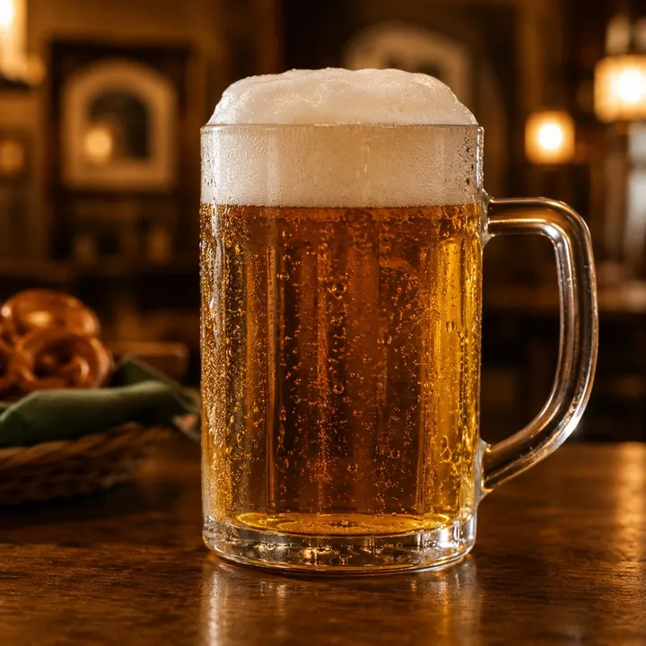
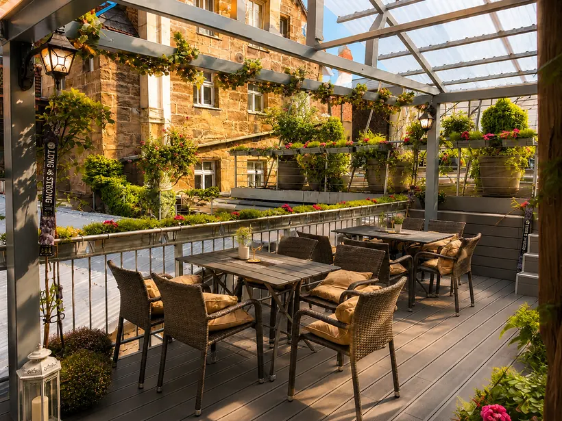
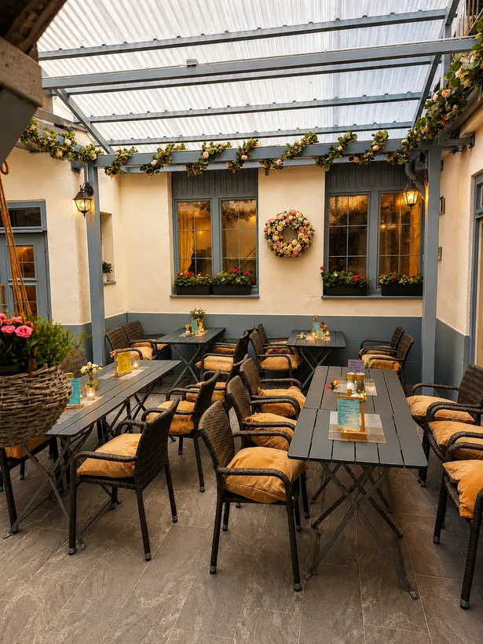
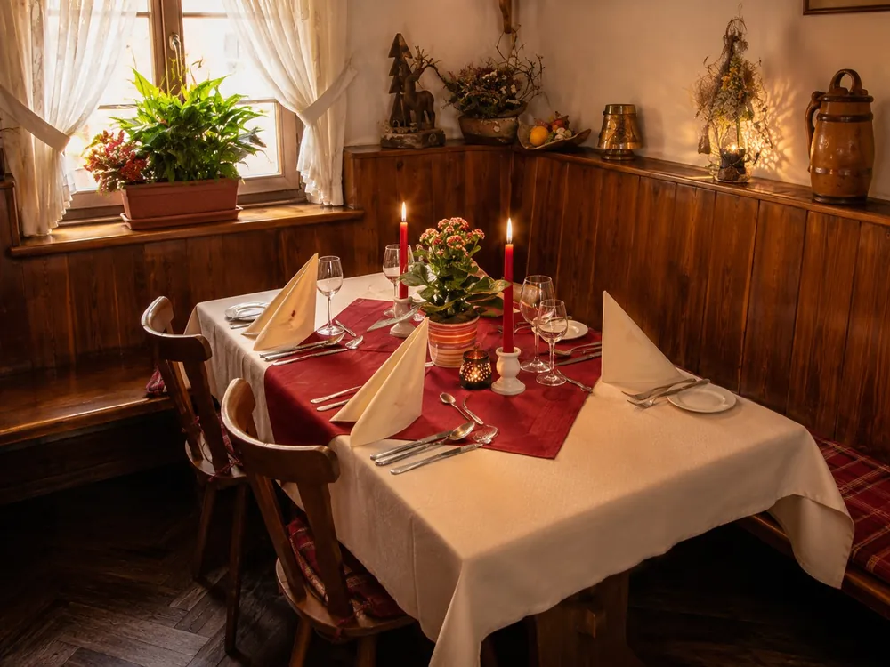
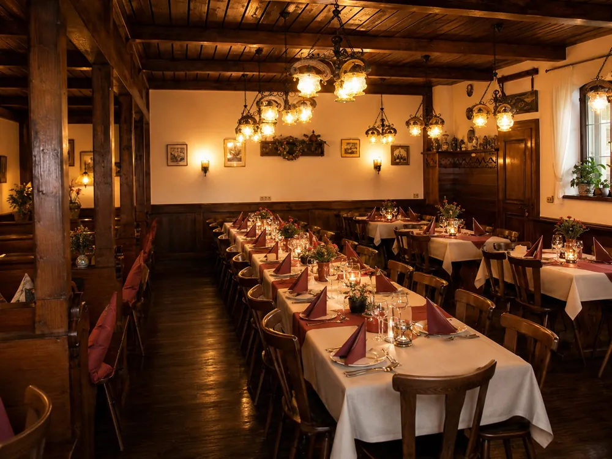

Schäufele
mit Kloß
Knusprig, herzhaft und klassisch fränkisch.
Traditionelle fränkische Küche im Herzen von Fürth

Herzlich willkommen in der Gaststätte „Zum Stadtwappen“. Bei uns erwartet Sie traditionelle fränkische Küche in gemütlicher Atmosphäre – mitten in Fürth.
Ob Schäufele, Braten, Fischgerichte oder saisonale Spezialitäten: Wir kochen bodenständig, herzhaft und mit Liebe zur Region.
Mehr über uns →

Knusprig, herzhaft und klassisch fränkisch.

Saisonale Fischküche nach fränkischer Art.

Kräftige Soßen, feine Beilagen und warme Aromen.

Perfekt zu deftiger Küche und geselligen Abenden.
Unser geschützter Innenhof bietet gemütliche Plätze unter dem Glasdach, warme Beleuchtung und ein entspanntes Ambiente für fränkische Küche, Bier vom Fass und erfrischende Drinks.
Ideal für eine Pause in der Stadt, ein gemeinsames Abendessen oder den Aperitif vor der Feier.
Mehr Bilder ansehen →

Ob Geburtstag, Hochzeit, Vereinsfeier oder Betriebsfest – Saal, Nebenzimmer und Biergarten bieten den passenden Rahmen für Ihre Veranstaltung.
Mehr erfahren

Für Mittagessen, Abendessen oder Feiern rufen Sie uns einfach an.
{kind=link}
{kind=link}